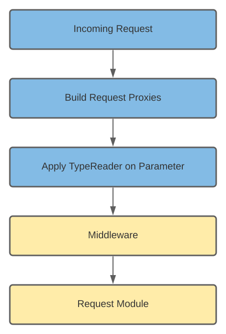

TypeReader
This section will give you a general idea of how type readers work and how you can write your custom ones.
What are TypeReaders
What are TypeReaders even? Short answer. They are converters. They are used if you want your module parameter to not just be a simple string. Maybe you want it to be a collection, an enum or an integer. TwitchNET already has implemented a few default converters.
Value types that are supported:
- string
- int
- uint
- double
- long
- ulong
- byte
- sbyte
How to utilize Type Readers
Maybe you ask yourself now, how do I use these converters now? Well to answer that question, I want you to explain you the lifecycle of an incoming request in TwitchNET.
The blue fields in the lifecycle are always called. The yellow ones is your custom input. In the section "Apply TypeReader on Parameter" all registered converters are getting pulled and the converter for the Type you used as an parameter in your module will convert the string.
Register TypeReader
Each TwitchCommander has the option to register custom Middleware and custom TypeReader with the parameter middlewareBuilder.
public async Task InitializeAsync()
{
//...
await commander.InitializeCommanderAsync(
serviceCollection: BuildServiceCollection(),
typeof(Program).Assembly,
middlewareBuilder: BuildRequestPipeline()
);
}
private static PipelineBuilder BuildRequestPipeline()
=> new PipelineBuilder()
.UseTypeReader<DummyTypeReader>();
The class PipelineBuilder has extension methodes to register your custom TypeReader.